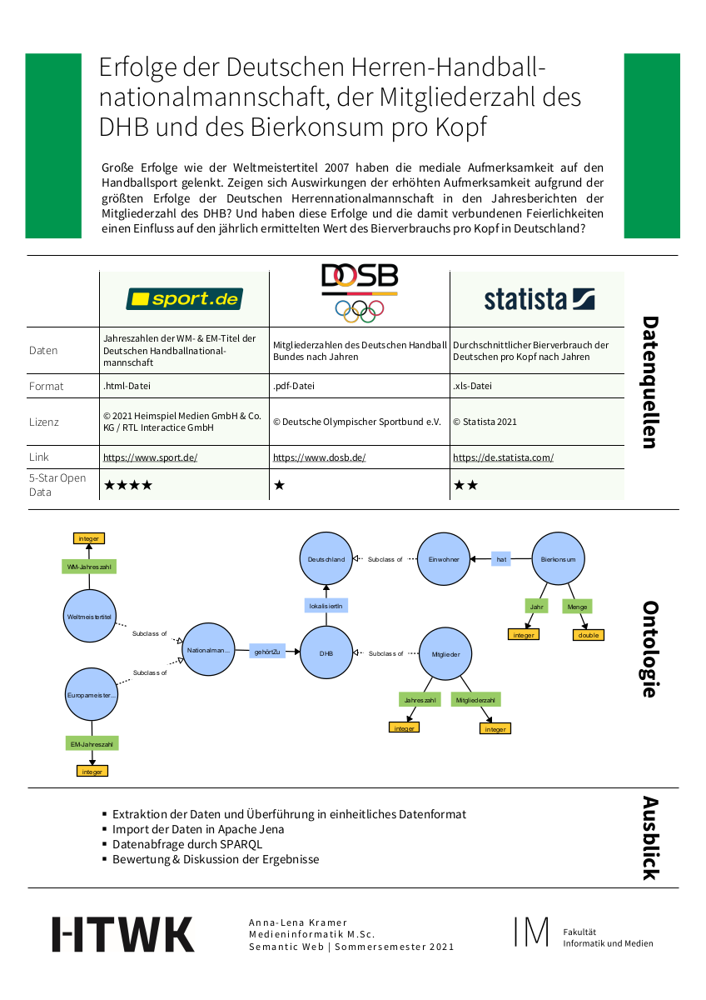

Anna-Lena
Große Erfolge wie der Weltmeistertitel 2007 haben die mediale Aufmerksamkeit auf den Handballsport gelenkt. Zeigen sich Auswirkungen der erhöhten Aufmerksamkeit aufgrund der größten Erfolge der Deutschen Herrennationalmannschaft in den Jahresberichten der Mitgliederzahl des DHB? Und haben diese Erfolge und die damit verbundenen Feierlichkeiten einen Einfluss auf den jährlich ermittelten Wert des Bierverbrauchs pro Kopf in Deutschland?
